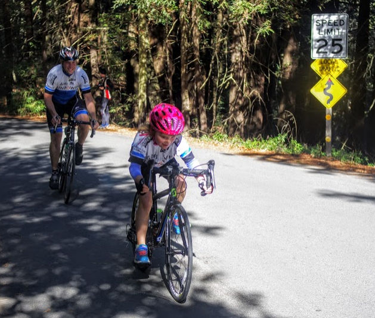

Low-Key Hillclimbs Aggregate Results:
OLH
generated Fri Nov 4 10:34:15 PDT 2016
|
|  |
| 2015 week 7: LouLou Kelly, with aerodynamics better even than Cavendish at his best, outsprints her father David to crush her PR on OLH (Brian Ward) |
Results are listed here from the Low-Key archives, sorted by time for each climb. Some years start and/or finish time differ slightly, such as
with Kings Mt Road where after 1995 the start moved from Entrance Way to Greer.
Results are ranked by time first, score second.
Score is calculated using a simple percent-of-median-speed
formula, with time adjustments for division. These scores will generally differ from those calculated in the results for that particular year, since
the scoring scheme has evolved. Tandems are split between 1998, when they were counted as single participants, and other years, when the individual
riders have been counted separately
Results for Men
| rank | time | score | rider | cat | team | year | week | code |
|---|
| 1 | 15:35 | 136.791 | Christopher Phipps | 35+ | Western Wheelers | 2009 | 2 | |
| 2 | 15:41 | 132.625 | Todd Markelz | 4 35+ | Google | 2015 | 7 | |
| 3 | 15:47 | 131.785 | Blaise Hamel | 3 | Stanford & Sons | 2015 | 7 | |
| 4 | 15:51 | 131.230 | Hanns Detlefsen | 40+ | Sr's & Mr's of No Mercy | 2015 | 7 | |
| 5 | 15:57 | 133.647 | Justin Lucke | 35+ | LGBRC | 2009 | 2 | |
| 6 | 15:58 | 133.507 | Brian Lucido | 30+ | | 2009 | 2 | |
| 7 | 16:00 | 132.188 | Brian Lucido | Tandem | Sr's & Mr's of No Mercy | 2010 | 2 | |
| 8 | 16:00 | 131.820 | Tracy Colwell | Public | Wheelsuckers | 1996 | X | |
| 9 | 16:03 | 129.595 | David Collet | 45+ | Stanford & Sons | 2015 | 7 | |
| 10 | 16:13 | 128.263 | Kevin Metcalfe | 1 | KKMetcalfe | 2015 | 7 | |
| 11 | 16:16 | 130.020 | Michael ONeil | 30+ | Third Pillar | 2010 | 2 | |
| 12 | 16:18 | 127.607 | Chris Evans | 35+ | Stanford & Sons | 2015 | 7 | |
| 13 | 16:21 | 129.358 | Tim Clark | 40+ | Low-Key | 2010 | 2 | |
| 14 | 16:27 | 128.571 | Kieran Sherlock | 40+ | Western Wheelers | 2010 | 2 | |
| 14 | 16:27 | 128.571 | john novitsky | 50+ | VOS Racing Team | 2010 | 2 | |
| 16 | 16:30 | 126.061 | Carl Nielson | 55+ | Sr's & Mr's of No Mercy | 2015 | 7 | |
| 17 | 16:33 | 126.385 | Scott Frake | Bald | WAV-ARA | 2006 | 2 | |
| 18 | 16:42 | 124.551 | Bill Laddish | 45's | Team CVC | 2015 | 7 | |
| 19 | 16:43 | 127.517 | Ciaran Byrne | | | 2009 | 2 | |
| 20 | 16:46 | 124.056 | Morgan Raines | 40+ | Bike Trip/Symantec | 2015 | 7 | |
| 21 | 16:51 | 126.508 | Ammon Skidmore | 30+ | Team Roaring Mouse | 2009 | 2 | |
| 22 | 16:53 | 126.259 | Eric Balfus | | LGBRC | 2009 | 2 | |
| 23 | 16:53 | 123.198 | Joseph Sullivan | 35+ | San Jose Bike Club | 2015 | 7 | |
| 24 | 16:57 | 124.779 | Rich Hill | 45+ | LGBRC | 2010 | 2 | |
| 25 | 16:59 | 123.160 | Ryan Sherlock | 35+ | Mad/Ireland | 2006 | 2 | |
| 26 | 17:01 | 122.919 | Andrey Revyakin | 30+ | | 2006 | 2 | |
| 27 | 17:04 | 124.902 | Jon Ornstil | 45+ | VOS | 2009 | 2 | |
| 28 | 17:05 | 124.780 | Ken Spencer | 30+ | Western Wheelers | 2009 | 2 | |
| 29 | 17:06 | 123.684 | Carl Nielson | 50+ | Sr's & Mr's of No Mercy | 2010 | 2 | |
| 30 | 17:06 | 121.637 | Daniel Connelly | 3 | Low-Key | 2015 | 7 | |
| 31 | 17:07 | 121.519 | Kirk Scheibelhut | Runner With A Bike | Sparklemotion | 2015 | 7 | |
| 32 | 17:09 | 124.295 | Krishna Dole | Unreformed Mt. Biker | Mud 'n' Crud | 2009 | 2 | |
| 33 | 17:09 | 121.283 | Shahram Moatazedi | 40+ | LGBRC | 2015 | 7 | |
| 34 | 17:13 | 121.491 | Brian Edwards | 25+ | | 2006 | 2 | |
| 35 | 17:16 | 123.456 | Mark Edwards | 45+ | Bike Trip/Symantec | 2009 | 2 | |
| 36 | 17:17 | 123.337 | Clark Foy | 45+ | Metrigear | 2009 | 2 | |
| 37 | 17:18 | 120.906 | Menso de Jong | Junior | Santa Cruz Syndicate | 2006 | 2 | |
| 38 | 17:19 | 120.789 | Kieran Sherlock | Open | Alto Velo | 2006 | 2 | |
| 39 | 17:21 | 119.885 | Rob Nast | 50+ | Plus: | 2015 | 7 | |
| 40 | 17:22 | 128.695 | Daniel Connelly | 4 | Stanford/Wheelsmith | 1995 | 4 | |
| 41 | 17:22 | 121.785 | James Porter | 3 | Western Wheelers | 2010 | 2 | |
| 42 | 17:23 | 120.326 | Jens Heycke | 45+ | Me | 2006 | 2 | |
| 43 | 17:27 | 122.159 | Thomas Novikoff | 2 | Alto Velo | 2009 | 2 | |
| 44 | 17:28 | 122.042 | Doug Philippone | 35+ | Palantir | 2009 | 2 | |
| 45 | 17:29 | 120.972 | Shon Grabbe | 40+ | San Jose Bike Club | 2010 | 2 | |
| 46 | 17:32 | 121.578 | Rich Hill | 40+ | LGBRC | 2009 | 2 | |
| 47 | 17:32 | 119.297 | Bill Davis | 4 | Alto Velo | 2006 | 2 | |
| 48 | 17:32 | 118.631 | Kieran Sherlock | 45+ | IdentityMind | 2015 | 7 | |
| 49 | 17:33 | 119.183 | Clark Foy | 40+ | San Jose Bike Club | 2006 | 2 | |
| 50 | 17:36 | 119.836 | Daniel Connelly | USCF 4 | TnT | 1996 | X | |
| 51 | 17:36 | 118.845 | Daryl Spano | 40+ | San Jose Bike Club | 2006 | 2 | |
| 52 | 17:40 | 117.736 | Lyndsey Furtado | 3 | Team CVC | 2015 | 7 | |
| 53 | 17:41 | 120.547 | Nils Tikkanen | 3 | Bike Trip/Symantec | 2009 | 2 | |
| 54 | 17:42 | 118.173 | Dominic Giampaolo | One-Handed Gimp | Alto Velo | 2006 | 2 | |
| 55 | 17:43 | 119.379 | brian edwards | | The Dirkers | 2010 | 2 | |
| 56 | 17:43 | 118.062 | Daniel Connelly | 3 | TNT | 2006 | 2 | |
| 57 | 17:46 | 119.981 | James Porter | 3 | Western Wheelers | 2009 | 2 | |
| 58 | 17:47 | 125.679 | Lorin Hawley | Mas 4 | Apple/VeloXS | 1995 | 4 | |
| 59 | 17:47 | 119.869 | Rune Dahl | 45+ | Western Wheelers | 2009 | 2 | |
| 60 | 17:49 | 118.709 | Mark Drayton | 30+ | London Dynamo | 2010 | 2 | |
| 61 | 17:49 | 116.745 | Scott Gammon | 6 | Legendary | 2015 | 7 | |
| 61 | 17:49 | 116.745 | Paul Castonguay | 45+ | Low-Key | 2015 | 7 | |
| 63 | 17:50 | 116.636 | Tom Dillon | 45+ | Pen Velo/Pomodoro | 2015 | 7 | |
| 64 | 17:52 | 118.047 | Mike Podgorski | USCF 5 | Strada | 1996 | X | |
| 65 | 17:53 | 119.199 | Laurent Pfertzel | 45+ | | 2009 | 2 | |
| 66 | 17:53 | 116.962 | David Kelly | 4 | Alto Velo | 2006 | 2 | |
| 67 | 17:55 | 118.977 | David Nader | 35+ | Pen Velo/Pomodoro | 2009 | 2 | |
| 68 | 17:56 | 118.866 | Andy Brisnehan | 50+ | Western Wheelers | 2009 | 2 | |
| 69 | 17:56 | 117.937 | Tom Gardin | 45+ | | 2010 | 2 | |
| 70 | 17:57 | 115.877 | Alex Poloziouk | 40+ | Kovarus | 2015 | 7 | |
| 71 | 17:58 | 117.718 | Colin Daw | U23 | Wheel Away | 2010 | 2 | |
| 72 | 18:03 | 118.098 | Tom Gardin | 45+ | | 2009 | 2 | |
| 73 | 18:03 | 115.235 | Stephen Lamm | 40+ | Google | 2015 | 7 | |
| 74 | 18:04 | 117.066 | Ron Brunner | 40+ | Low-Key | 2010 | 2 | |
| 75 | 18:04 | 115.775 | James Porter | Out Of Shape Dads | Western Wheelers | 2006 | 2 | |
| 76 | 18:06 | 116.851 | Ryan Bickerstaff | 25+ | PowerBar | 2010 | 2 | |
| 77 | 18:06 | 114.917 | Andy Crews | 45+ | Diablo | 2015 | 7 | |
| 78 | 18:07 | 116.743 | Shance Ordell | 35+ | Western Wheelers | 2010 | 2 | |
| 79 | 18:09 | 116.529 | Mark Foster | 45+ | Coretechs Cycling Team | 2010 | 2 | |
| 80 | 18:10 | 117.339 | Goeric Daeninck | | | 2009 | 2 | |
| 81 | 18:11 | 116.315 | Christian Paquet | 50+ | Doogie | 2010 | 2 | |
| 82 | 18:12 | 117.125 | Bruce Gardner | 35+ | Sr's & Mr's of No Mercy | 2009 | 2 | |
| 82 | 18:12 | 117.125 | Geoff Drake | 50+ | Bike Trip/Symantec | 2009 | 2 | |
| 84 | 18:14 | 114.717 | Rupert Brauch | 3 | WAV-ARA | 2006 | 2 | |
| 85 | 18:17 | 113.765 | Harlan Chapman | 55+ | | 2015 | 7 | |
| 86 | 18:21 | 116.167 | Andrew Evans | 35+ | Alto Velo | 2009 | 2 | |
| 87 | 18:21 | 113.987 | Martin Voogel | 35+ | Alto Velo | 2006 | 2 | |
| 88 | 18:22 | 115.154 | Martin Hyland | 50+ | Western Wheelers | 2010 | 2 | |
| 89 | 18:27 | 113.369 | Kenneth Norton | 35+ | Pen Velo/Pomodoro | 2006 | 2 | |
| 90 | 18:28 | 114.531 | Tim Sawyer | 50+ | Bike Trip/Symantec | 2010 | 2 | |
| 90 | 18:28 | 114.531 | Chris Evans | 30+ | Bikeforums.net | 2010 | 2 | |
| 92 | 18:29 | 115.329 | Matt Wocasek | 3 | Bike Trip/Symantec | 2009 | 2 | |
| 93 | 18:29 | 114.427 | Brian Sterling | 45+ | Alto Velo | 2010 | 2 | |
| 94 | 18:31 | 114.221 | Justin Lucke | Vegan | LGBRC | 2010 | 2 | |
| 95 | 18:34 | 113.914 | Carmelo Rios | 50+ | Plus 3 | 2010 | 2 | |
| 96 | 18:35 | 112.556 | James Hill | 50+ | AV: Old Guys Finish | 2006 | 2 | |
| 97 | 18:39 | 114.298 | Jeff Farnsworth | 50+ | San Jose Bike Club | 2009 | 2 | |
| 98 | 18:40 | 111.429 | Rich Hill | 50+ | LGBRC | 2015 | 7 | |
| 99 | 18:42 | 113.993 | Barrett Ausman | 4 | Alto Velo | 2009 | 2 | |
| 100 | 18:43 | 111.754 | Tore Nauta | 30+ | Alto Velo | 2006 | 2 | |
| 101 | 18:43 | 111.131 | Dash Bodington | Erpillar | Stanford cycling | 2015 | 7 | |
| 102 | 18:45 | 110.933 | Joe Fant | 55+ | LGBRC | 2015 | 7 | |
| 103 | 18:47 | 110.736 | Klaus Fleischmann | 45+ | Pen Velo/Pomodoro | 2015 | 7 | |
| 104 | 18:48 | 113.387 | Bill Davis | 25+ | Google | 2009 | 2 | |
| 105 | 18:48 | 112.500 | Bruce Gardner | 35+ | Sr's & Mr's of No Mercy | 2010 | 2 | |
| 106 | 18:49 | 112.400 | J.D. Daniels | 35+ | Eden Bicycles | 2010 | 2 | |
| 107 | 18:50 | 113.186 | Michael Simos | 35+ | LGBRC | 2009 | 2 | |
| 108 | 18:51 | 110.345 | Daryl Spano | 45+ | San Jose Bike Club | 2015 | 7 | |
| 109 | 18:52 | 112.986 | Justin China | 30+ | | 2009 | 2 | |
| 110 | 18:52 | 112.102 | John Richardson | 55+ | Pen Velo/Pomodoro | 2010 | 2 | |
| 111 | 18:54 | 110.670 | Peter Mehlitz | 45+ | | 2006 | 2 | |
| 112 | 18:55 | 111.806 | Joe Fabris | 50+ | Plus 3 | 2010 | 2 | |
| 112 | 18:55 | 111.806 | Jeff Farnsworth | 50+ | San Jose Bike Club | 2010 | 2 | |
| 114 | 18:56 | 112.588 | Shon Grabbe | 35+ | San Jose Bike Club | 2009 | 2 | |
| 115 | 18:58 | 109.666 | Brian Schuster | 2 | Squadra SF | 2015 | 7 | |
| 116 | 19:04 | 110.927 | Dane Johnson | 20+ | Google | 2010 | 2 | |
| 117 | 19:06 | 110.733 | Michael Kolb | 45+ | Google | 2010 | 2 | |
| 117 | 19:06 | 110.733 | Michael Barnes | 50+ | | 2010 | 2 | |
| 119 | 19:07 | 111.508 | Aaron Paterson | 3 | Unattached | 2009 | 2 | |
| 120 | 19:07 | 109.416 | Geo Kitta | 50+ | Pen Velo/Pomodoro | 2006 | 2 | |
| 121 | 19:10 | 108.522 | Twain Mein | 45+ | Team Sheeper | 2015 | 7 | |
| 122 | 19:11 | 109.945 | Lee Kendall | USCF 4 | Wheelsuckers | 1996 | X | |
| 123 | 19:13 | 108.239 | Doug MacPherson | 40+ | Pen Velo/Pomodoro | 2015 | 7 | |
| 124 | 19:14 | 108.146 | Jeff Baxter | 45+ | LGBRC | 2015 | 7 | |
| 125 | 19:15 | 110.736 | Ben Weir | 25+ | Bikeforums.net | 2009 | 2 | |
| 126 | 19:16 | 110.640 | Jim Langley | 55+ | Bike Trip/Symantec | 2009 | 2 | |
| 127 | 19:16 | 108.564 | Phil Mehlitz | Beach Bum | LGBRC | 2006 | 2 | |
| 128 | 19:17 | 110.545 | Tim Sawyer | 45+ | Bike Trip/Symantec | 2009 | 2 | |
| 129 | 19:17 | 107.865 | Mark Slavonia | 45+ | Pen Velo/Pomodoro | 2015 | 7 | |
| 130 | 19:19 | 110.354 | Mark Debbage | 40+ | | 2009 | 2 | |
| 131 | 19:19 | 109.491 | Chuck Spiteri | 50+ | Pen Velo/Pomodoro | 2010 | 2 | |
| 132 | 19:20 | 109.092 | Loren Crannell | USCF 3 | Alto Velo | 1996 | X | |
| 133 | 19:21 | 109.302 | Adam Brinkman | 30+ | The Dirkers | 2010 | 2 | |
| 134 | 19:24 | 109.880 | Nick Pelly | | Google | 2009 | 2 | |
| 135 | 19:25 | 108.927 | Josh Hayes | 30+ | Sr's & Mr's of No Mercy | 2010 | 2 | |
| 136 | 19:25 | 107.725 | Ramon Alarcon | 4 | San Jose Bike Club | 2006 | 2 | |
| 137 | 19:25 | 107.124 | Andy Sutterfield | 25+ | San Jose State University | 2015 | 7 | |
| 138 | 19:29 | 109.410 | Carmelo Rios | 50+ | Plus 3 | 2009 | 2 | |
| 139 | 19:29 | 108.252 | Richard Herms | 35+ | Sierra Speed Gel | 1996 | X | |
| 140 | 19:29 | 106.758 | Sandor Dornbush | 35+ | Sandor Dornbush | 2015 | 7 | |
| 141 | 19:31 | 108.369 | Stewart Thompson | 55+ | Pen Velo/Pomodoro | 2010 | 2 | |
| 142 | 19:32 | 109.130 | Michael Barnes | | | 2009 | 2 | |
| 142 | 19:32 | 109.130 | Adam Brinkman | 25+ | | 2009 | 2 | |
| 144 | 19:32 | 108.276 | Curtis Ruegg | 45+ | Pen Velo/Pomodoro | 2010 | 2 | |
| 145 | 19:34 | 108.944 | Leslie Oglesby | 35+ | Monterey Bay Racing Team | 2009 | 2 | |
| 146 | 19:34 | 106.303 | Jim Perreira | 45+ | San Jose Bike Club | 2015 | 7 | |
| 147 | 19:35 | 108.851 | Joe Fabris | 50+ | Plus 3 | 2009 | 2 | |
| 148 | 19:36 | 108.759 | Benoit Pelczar | 35+ | Bike Trip/Symantec | 2009 | 2 | |
| 149 | 19:38 | 108.574 | Joe Karbowski | | | 2009 | 2 | |
| 150 | 19:39 | 108.482 | Phil Dubach | 35+ | Western Wheelers | 2009 | 2 | |
| 150 | 19:39 | 108.482 | Scott Martin | 50+ | Bike Trip/Symantec | 2009 | 2 | |
| 152 | 19:39 | 105.852 | Kevin Comerford | 35+ | HellBent | 2015 | 7 | |
| 153 | 19:40 | 108.390 | Peter Mehlitz | 45+ | | 2009 | 2 | |
| 154 | 19:43 | 108.115 | Liam Stewart | | Team Roaring Mouse | 2009 | 2 | |
| 155 | 19:46 | 107.841 | Gino Cetani | 35+ | Western Wheelers | 2009 | 2 | |
| 156 | 19:46 | 106.701 | Mark Pietrofesa | None | Sunnyvale-Cupertino CC 35-45 | 1996 | X | |
| 157 | 19:47 | 105.139 | Matthew Brill | 35+ | | 2015 | 7 | |
| 157 | 19:47 | 105.139 | Giles Douglas | 3 | Google | 2015 | 7 | |
| 159 | 19:48 | 112.879 | Lance Waltjen | Any | Delta Velo | 1995 | 4 | |
| 160 | 19:48 | 106.818 | Naoto Sato | 45+ | | 2010 | 2 | |
| 161 | 19:50 | 106.639 | Russell McCrary | 50+ | Sr's & Mr's of No Mercy | 2010 | 2 | |
| 162 | 19:51 | 112.594 | Richard Crockett | 45+ | Apple/VeloXS | 1995 | 4 | |
| 163 | 19:52 | 104.698 | Pritpal Singh | 45+ | For Mark | 2015 | 7 | P |
| 164 | 19:53 | 106.370 | David Tobin | 20+ | Palantir | 2010 | 2 | |
| 165 | 19:54 | 106.281 | Kevin Comerford | 30+ | Eden Bicycles | 2010 | 2 | |
| 166 | 19:56 | 106.940 | Christian Paquet | 50+ | Doogie | 2009 | 2 | |
| 167 | 19:58 | 105.632 | Bill Bushnell | Public | Western Wheelers | 1996 | X | |
| 168 | 19:58 | 104.758 | Peter Tapscott | 50+ | AV: Old Guys Finish | 2006 | 2 | |
| 169 | 19:59 | 106.672 | Troy Folkner | 55+ | Western Wheelers | 2009 | 2 | |
| 170 | 20:00 | 111.750 | Richard Herms | 35+ | Team Adventure | 1995 | 4 | |
| 171 | 20:01 | 106.495 | Gary Broeder | 55+ | San Jose Bike Club | 2009 | 2 | |
| 172 | 20:03 | 104.323 | Fred E. Stamm | 50+ | Pen Velo/Pomodoro | 2006 | 2 | |
| 173 | 20:03 | 103.741 | Tim Aiken | Retired | Airgas-Safeway | 2015 | 7 | |
| 174 | 20:04 | 106.229 | Martin Hyland | 50+ | Western Wheelers | 2009 | 2 | |
| 175 | 20:04 | 103.654 | Val Minaev | 35+ | LGBRC | 2015 | 7 | |
| 175 | 20:04 | 103.654 | Jeremy Scott | 45+ | LGBRC | 2015 | 7 | |
| 177 | 20:06 | 106.053 | Martin Hampton | 45+ | Pen Velo/Pomodoro | 2009 | 2 | |
| 177 | 20:06 | 106.053 | Stewart Thompson | 5 | Pen Velo/Pomodoro | 2009 | 2 | |
| 179 | 20:06 | 103.483 | Andrew Fitzhugh | 50+ | Stanford cycling | 2015 | 7 | |
| 180 | 20:07 | 111.102 | Jeff Bell | Mas 4 | Alto Velo | 1995 | 4 | |
| 181 | 20:07 | 105.965 | Wajtek Poppe | Out Of Shape Dad | | 2009 | 2 | |
| 182 | 20:07 | 105.137 | Bryn Dole | 35+ | Blekko | 2010 | 2 | |
| 183 | 20:09 | 105.790 | Nicholas Konwest | Fresh Fish | | 2009 | 2 | |
| 184 | 20:09 | 104.671 | David Snyder | None | Wheelsuckers | 1996 | X | |
| 185 | 20:10 | 104.876 | Bob Truel | 40+ | Blekko | 2010 | 2 | |
| 186 | 20:12 | 104.703 | Carlos Reyes | 20+ | | 2010 | 2 | |
| 186 | 20:12 | 104.703 | Tony Amadio | 25+ | Fueled by Wendy's | 2010 | 2 | |
| 188 | 20:13 | 102.885 | Hal Rooney | 55+ Cat 3/Master | LGBRC | 2015 | 7 | |
| 189 | 20:14 | 104.530 | Ron Dunn | 50+ | | 2010 | 2 | |
| 190 | 20:16 | 102.632 | Chris Mickelsen | 55+ | Pen Velo/Pomodoro | 2015 | 7 | |
| 191 | 20:17 | 104.273 | Fred Egley | 45+ | Dos Egleys | 2010 | 2 | |
| 192 | 20:18 | 105.008 | John Becker | 5 | Team Roaring Mouse | 2009 | 2 | |
| 193 | 20:18 | 103.038 | Ron Brunner | Commuter | Commuter | 2006 | 2 | |
| 193 | 20:18 | 103.038 | Chris Soukup | 35+ | San Jose Bike Club | 2006 | 2 | |
| 195 | 20:20 | 104.836 | Winston Teear | 25+ | Team Tubby | 2009 | 2 | |
| 196 | 20:20 | 102.295 | Caleb Richardson | 30+ | Team CVC | 2015 | 7 | |
| 197 | 20:24 | 101.961 | Geoffrey Bower | 30+ | Dash | 2015 | 7 | M |
| 198 | 20:29 | 104.068 | Alan Weatherall | 45+ 4 | San Jose Bike Club | 2009 | 2 | |
| 199 | 20:29 | 101.546 | Bruno Acklin | 55+ | Clagnuts | 2015 | 7 | |
| 200 | 20:30 | 103.171 | Hu Liang | 35+ | Currenex | 2010 | 2 | |
| 201 | 20:30 | 101.463 | Steve Johnson | 50+ | LGBRC | 2015 | 7 | P |
| 202 | 20:31 | 101.950 | Dave Johnson | 20+ | Stanford Cycling | 2006 | 2 | |
| 203 | 20:32 | 103.815 | Neal Herman | 50+ | Spike the Wonder Dog | 2009 | 2 | |
| 204 | 20:33 | 102.920 | Eric Chi | 30+ | Nvidia | 2010 | 2 | |
| 205 | 20:34 | 102.550 | Jim Wilkinson | 35+ | Sierra Speed Gel | 1996 | X | |
| 206 | 20:35 | 103.563 | Peter Plackowski | 20+ | | 2009 | 2 | |
| 207 | 20:36 | 103.479 | Gary Shockey | 35+ | | 2009 | 2 | |
| 208 | 20:36 | 102.670 | Andrew Adelman | 40+ | Coretechs Cycling Team | 2010 | 2 | |
| 209 | 20:37 | 102.587 | Larry Klein | 50+ | Doogie | 2010 | 2 | |
| 210 | 20:40 | 108.145 | Mark Anderson | 5 | Alto Velo | 1995 | 4 | |
| 211 | 20:40 | 103.145 | Kurt Liittschwager | 45+ | Team Tubby | 2009 | 2 | |
| 212 | 20:41 | 103.062 | Brian Sterling | | | 2009 | 2 | |
| 213 | 20:44 | 102.814 | John Carrino | 25+ | Palantir | 2009 | 2 | |
| 214 | 20:44 | 101.726 | Lorin Hawley | USCF 4 | Apple Computer | 1996 | X | |
| 215 | 20:45 | 107.711 | Steve Blair | 40+ | Alto Velo | 1995 | 4 | |
| 216 | 20:46 | 100.161 | Brad Fox | 30+ | LGBRC | 2015 | 7 | |
| 217 | 20:48 | 102.484 | Michel Williams | | Sr's & Mr's of No Mercy | 2009 | 2 | |
| 218 | 20:48 | 100.000 | Scott Krahn | 30+ | LGBRC | 2015 | 7 | |
| 218 | 20:48 | 100.000 | Chauncey Graetzel | 35+ | LGBRC | 2015 | 7 | |
| 220 | 20:50 | 101.520 | Joe Karbowski | | Team Joe Karbowski | 2010 | 2 | |
| 221 | 20:51 | 101.439 | Ramon Ochoa | 35+ | Bikeforums.net | 2010 | 2 | |
| 222 | 20:52 | 101.358 | Peter Ingram | 55+ | Independent | 2010 | 2 | |
| 223 | 20:53 | 102.075 | Bart Johnson | 40+ | SLACer | 2009 | 2 | |
| 224 | 20:53 | 99.601 | Liam Sherlock | Junior | IdentityMind | 2015 | 7 | |
| 225 | 20:55 | 106.853 | Frank McGorman | Bikes And Brewsters | Bergmeisters Bicycl | 1995 | 4 | |
| 226 | 20:56 | 101.831 | Sandor Dornbush | 5 | Google | 2009 | 2 | |
| 227 | 20:56 | 99.363 | Martin Wegenstein | 65+ | LGBRC | 2015 | 7 | |
| 228 | 20:58 | 100.594 | Dave Harrison | None | Apple Computer | 1996 | X | |
| 228 | 20:58 | 100.594 | Duane Stephens | Public | TnT | 1996 | X | |
| 230 | 20:59 | 100.794 | Ryan Powell | 30+ | Team Joe Karbowski | 2010 | 2 | |
| 231 | 21:00 | 100.714 | bogdan marian | 30+ | Bikeforums.net | 2010 | 2 | |
| 232 | 21:03 | 100.475 | Jeff Shute | 30+ | Google | 2010 | 2 | |
| 233 | 21:06 | 100.237 | Thomas Rabedeau | 50+ | SLACer | 2010 | 2 | |
| 234 | 21:07 | 100.158 | David Vrane | 45+ | Sr's & Mr's of No Mercy | 2010 | 2 | |
| 235 | 21:09 | 100.000 | Rob Cosaro | 50+ | Doogie | 2010 | 2 | |
| 236 | 21:10 | 100.709 | Andre Swart | Junior | Ryro | 2009 | 2 | |
| 237 | 21:10 | 99.921 | Mark LaForge | 50+ | SSL Cycling Club | 2010 | 2 | |
| 238 | 21:10 | 98.268 | Marek Dutkiewicz | 50+ | Diablo | 2015 | 7 | |
| 239 | 21:13 | 100.471 | Ramon Ochoa | 35+ | Bikeforums.net | 2009 | 2 | |
| 240 | 21:14 | 97.959 | Mark Anderson | Unworthy Cat3 | pain cave addicts | 2015 | 7 | |
| 241 | 21:15 | 105.176 | Ed Miller | 55+ | | 1995 | 4 | |
| 242 | 21:18 | 100.078 | Ben Stern | 30+/Fixed | Team Roaring Mouse | 2009 | 2 | |
| 242 | 21:18 | 100.078 | Dan Cervelli | | Palantir | 2009 | 2 | |
| 244 | 21:19 | 98.124 | Alex Kramer | 5 | Western Wheelers | 2006 | 2 | |
| 245 | 21:20 | 99.922 | Vince Cummings | | | 2009 | 2 | |
| 246 | 21:21 | 99.844 | Fred Egley | 45+ | Dos Egley's | 2009 | 2 | |
| 247 | 21:22 | 99.766 | Christopher O'Keefe | | | 2009 | 2 | |
| 248 | 21:22 | 98.986 | David Engelbrecht | 40+ Tandem | Summit chuters | 2010 | 2 | |
| 249 | 21:23 | 99.688 | Donald Lee | 35+ | Bikeforums.net | 2009 | 2 | |
| 249 | 21:23 | 99.688 | Jeff Shute | 30+ | Google | 2009 | 2 | |
| 249 | 21:23 | 99.688 | Thomas Rabedeau | 50+ | SLACer | 2009 | 2 | |
| 252 | 21:23 | 97.272 | Doug Reynolds | 60+ | NightRiders | 2015 | 7 | |
| 253 | 21:24 | 98.832 | Bob Falkenberg | 45+ | Alto Velo | 2010 | 2 | |
| 254 | 21:26 | 97.589 | Greg Dougald | 40+ | AV: Old Guys Finish | 2006 | 2 | |
| 255 | 21:28 | 99.301 | Daniel Harrington | 40+ | SLACer | 2009 | 2 | |
| 256 | 21:29 | 97.362 | Michael Ma | 6 | Safeway | 2006 | 2 | |
| 257 | 21:30 | 103.953 | John Alafouzos | 40+ | Team Adventure | 1995 | 4 | |
| 257 | 21:30 | 103.953 | Val Hargrove | Bikes And Brewsters | Bergmeisters Bicycl | 1995 | 4 | |
| 259 | 21:30 | 96.744 | Jim Williams | 65+ | San Jose Bike Club | 2015 | 7 | |
| 260 | 21:32 | 98.994 | David Vrane | 45+ | SLACer | 2009 | 2 | |
| 261 | 21:32 | 98.220 | Richard Contreras | 50+ | rhus | 2010 | 2 | |
| 262 | 21:33 | 98.144 | Loren Vorreiter | 40+ | | 2010 | 2 | |
| 263 | 21:36 | 103.472 | Dick Fulton | Old Bike Old Body | N/A | 1995 | 4 | |
| 264 | 21:36 | 96.836 | Martin Hyland | 50+ | Western Wheelers | 2006 | 2 | |
| 265 | 21:37 | 97.841 | Paul Melville | 60+ | Doogie | 2010 | 2 | |
| 266 | 21:39 | 96.074 | Robert Doudell | 45+ | LGBRC | 2015 | 7 | |
| 267 | 21:41 | 95.926 | Marco Soldano | 45+ OLH=21:12 | Quadzilla Racing | 2015 | 7 | |
| 268 | 21:43 | 95.779 | Rick Ferrell | 55+ | Team Spokesman | 2015 | 7 | |
| 269 | 21:44 | 97.316 | Han Wen | 40+ | Grumpy Old Men (GOM) | 2010 | 2 | |
| 270 | 21:45 | 98.008 | William Von Kaenel | 50+ | LGBRC | 2009 | 2 | |
| 270 | 21:45 | 98.008 | Stephen Fong | 40+ | San Jose Bike Club | 2009 | 2 | |
| 272 | 21:46 | 97.933 | Vince Valvano | | | 2009 | 2 | |
| 273 | 21:47 | 97.858 | Mike Czepiel | 25+ | Apple | 2009 | 2 | |
| 274 | 21:48 | 95.413 | Brian Fitzgerald | 50+ | LGBRC | 2015 | 7 | |
| 275 | 21:49 | 97.708 | Loren Vorreiter | 40+ | Western Wheelers | 2009 | 2 | |
| 276 | 21:53 | 95.050 | Scott Byer | 45+ | Google | 2015 | 7 | |
| 277 | 21:57 | 96.355 | Robert Zeljko | 40+ | Almost There | 2010 | 2 | |
| 278 | 21:58 | 96.282 | Dirk Veenema | 30+ | The Dirkers | 2010 | 2 | |
| 279 | 22:04 | 96.601 | James Deitrich | MTB | Team Tubby | 2009 | 2 | |
| 280 | 22:04 | 94.789 | Peter Merril | 50+ | | 2006 | 2 | |
| 281 | 22:11 | 100.751 | Brendan Leary | 5 | Alto Velo | 1995 | 4 | |
| 282 | 22:12 | 96.021 | Matt Beadon | 30+ | | 2009 | 2 | |
| 283 | 22:13 | 93.623 | Thomas Preisler | 60+ | LGBRC | 2015 | 7 | |
| 284 | 22:14 | 95.877 | Naoto Sato | 40+ | | 2009 | 2 | |
| 285 | 22:15 | 95.056 | David Fitch | 65+ | San Jose Bike Club | 2010 | 2 | |
| 286 | 22:15 | 94.792 | Rick Carmichael | USCF 5 | Apple Computer | 1996 | X | |
| 287 | 22:15 | 94.007 | Barry Burr | 45+ | Men with Guts | 2006 | 2 | |
| 288 | 22:15 | 93.483 | Dan Brehmer | 50+ | San Jose Bike Club | 2015 | 7 | |
| 289 | 22:18 | 94.843 | Patrick Callahan | 40+ | Hara | 2010 | 2 | |
| 290 | 22:20 | 95.448 | Pete Petroski | Beyond | Western Wheelers | 2009 | 2 | |
| 291 | 22:21 | 93.587 | Matthew Larson | | Hopefully fast | 2006 | 2 | |
| 292 | 22:22 | 94.297 | Thomas Maslen | Public | Western Wheelers | 1996 | X | |
| 293 | 22:24 | 94.420 | Christopher O'Keefe | 40+ | Atomic Bonk | 2010 | 2 | |
| 294 | 22:28 | 94.881 | Jan Novak | 30+ | Team Tubby | 2009 | 2 | |
| 295 | 22:29 | 92.513 | Nigel Allen | 40+ | Oso | 2015 | 7 | |
| 296 | 22:30 | 92.963 | H. William Mirbach | 55+ | Pen Velo/Pomodoro | 2006 | 2 | |
| 297 | 22:30 | 92.444 | Larry Klein | 55+ | Grumpy Old Men (GOM) | 2015 | 7 | |
| 298 | 22:31 | 99.260 | Damien Hopping | None | N/A | 1995 | 4 | |
| 299 | 22:33 | 93.792 | Jay Cohan | 45+ | Spike the Wonder Dog | 2010 | 2 | |
| 300 | 22:34 | 94.461 | Keijiro Ikebe | Livestrong | Livestrong | 2009 | 2 | |
| 301 | 22:34 | 92.171 | Roupen Nahabedian | 45+ Cat 4 | Pen Velo/Pomodoro | 2015 | 7 | |
| 302 | 22:35 | 94.391 | Ilyas Elkin | 25+ | | 2009 | 2 | |
| 303 | 22:36 | 92.035 | Ye Zhang | Just Make It To The Top | Team Cycling Panda | 2015 | 7 | |
| 304 | 22:39 | 94.113 | Paul Melville | 55+ | Doogie | 2009 | 2 | |
| 305 | 22:39 | 92.347 | Bob Parker | 50+ | AV: Old Guys Finish | 2006 | 2 | |
| 306 | 22:40 | 98.603 | Mark Nix | Idiot | Team FRED | 1995 | 4 | |
| 307 | 22:41 | 91.697 | Pat Callahan | 45+ | Quadzilla Racing | 2015 | 7 | |
| 308 | 22:42 | 91.630 | Fred Egley | 50+ | Clagnuts | 2015 | 7 | |
| 309 | 22:43 | 93.837 | Mark Powers | 50+ | Pen Velo/Pomodoro | 2009 | 2 | |
| 310 | 22:43 | 92.844 | Randy Pufahl | None | Apple Computer | 1996 | X | |
| 311 | 22:45 | 91.429 | Cory Roay | 55+ | Pen Velo/Pomodoro | 2015 | 7 | |
| 312 | 22:46 | 92.899 | John D Kastel | 45+ | Death Valley | 2010 | 2 | |
| 313 | 22:46 | 91.362 | Carl Werner | 50+ | LGBRC | 2015 | 7 | |
| 314 | 22:48 | 93.494 | Oliver | | | 2009 | 2 | |
| 315 | 22:48 | 91.228 | Broder Schmidt | 30+ | Stanford cycling | 2015 | 7 | |
| 316 | 22:49 | 93.426 | Han Wen | 40+ | | 2009 | 2 | |
| 317 | 22:51 | 92.560 | Jon Degenhardt | 50+ | Argonauts | 2010 | 2 | |
| 317 | 22:51 | 92.560 | Garry Chinn | | Silicon Valley Triathlon | 2010 | 2 | |
| 317 | 22:51 | 92.560 | Frank Hislop | 30+ | Google | 2010 | 2 | |
| 320 | 22:55 | 91.273 | Alex Matthews | Cotter Pin | No Team | 2006 | 2 | |
| 320 | 22:55 | 91.273 | Stephen Fong | 5 | San Jose Bike Club | 2006 | 2 | |
| 322 | 22:56 | 92.951 | Steve Chapel | 65+ | Western Wheelers | 2009 | 2 | |
| 323 | 22:58 | 91.074 | Keith Devlin | 55+ | Team Devlin | 2006 | 2 | |
| 324 | 22:59 | 92.748 | Jens Weber | 30+ | Doogie | 2009 | 2 | |
| 325 | 23:00 | 97.174 | Achut Reddy | 4 | Alto Velo | 1995 | 4 | |
| 326 | 23:00 | 92.681 | Peter Ingram | 5 | | 2009 | 2 | |
| 327 | 23:00 | 90.435 | Rupesh Kapoor | Slightly Old | Google | 2015 | 7 | |
| 328 | 23:01 | 91.890 | harsha bhat | 40+ | Currenex | 2010 | 2 | |
| 329 | 23:03 | 92.480 | Ron Songer | 50+ | Out of Shape Dads | 2009 | 2 | |
| 330 | 23:05 | 91.625 | Tom Barry | 35+ | Poprad | 2010 | 2 | |
| 331 | 23:06 | 96.753 | David Fisher | 5 | Alto Velo | 1995 | 4 | |
| 332 | 23:08 | 92.147 | Patrick Callahan | 40+ | Western Wheelers | 2009 | 2 | |
| 333 | 23:08 | 91.427 | Stephen Fong | 40+ | San Jose Bike Club | 2010 | 2 | |
| 334 | 23:08 | 89.914 | Karshan Sharma | Just Make It To The Top | Google | 2015 | 7 | |
| 335 | 23:10 | 91.295 | Andrew Fitzhugh | 45+ | | 2010 | 2 | |
| 336 | 23:10 | 91.041 | Eric Evitt | 35+ | Wheelsuckers | 1996 | X | |
| 337 | 23:11 | 91.948 | Garry Chinn | | Silicon Valley Triathlon | 2009 | 2 | |
| 337 | 23:11 | 91.948 | Nic Brummell | 45+ | Atlas | 2009 | 2 | |
| 339 | 23:14 | 91.750 | Keith Devlin | 60+ | Western Wheelers | 2009 | 2 | |
| 340 | 23:15 | 96.129 | Richard Bone | 28 Yr Old Eng | Western Wheelers | 1995 | 4 | |
| 340 | 23:15 | 96.129 | Pete Petroski | Beyond | Western Wheelers | 1995 | 4 | |
| 342 | 23:15 | 91.685 | Marty Beene | 45+ | Team Alameda | 2009 | 2 | |
| 343 | 23:15 | 90.968 | Ed Miller | 70+ | SLACer | 2010 | 2 | |
| 344 | 23:16 | 90.903 | Gary Griffin | 55+ | Bike Trip/Symantec | 2010 | 2 | |
| 345 | 23:19 | 90.708 | Thomas Preisler | 55+ | LGBRC | 2010 | 2 | |
| 346 | 23:24 | 90.133 | Eric Rescorla | Public | Wheelsuckers | 1996 | X | |
| 347 | 23:29 | 90.774 | Thomas Preisler | 50+ | LGBRC | 2009 | 2 | |
| 348 | 23:29 | 90.064 | oliver chan | 4 | Voler | 2010 | 2 | |
| 349 | 23:30 | 95.106 | Henry Hurkmans | 4 | Fremont Freewheeler | 1995 | 4 | |
| 350 | 23:32 | 88.385 | Dan Pankratz | 40+ | LGBRC | 2015 | 7 | |
| 351 | 23:36 | 89.619 | Steve Chapel | 65+ | Western Wheelers | 2010 | 2 | |
| 352 | 23:40 | 89.366 | Barry Burr | 4/45 | Femur Fantastic | 2010 | 2 | |
| 353 | 23:40 | 89.117 | Todd Schmidt | MTB | Wheelsuckers | 1996 | X | |
| 354 | 23:42 | 89.944 | Brun Dole | Awesome | Blekko | 2009 | 2 | |
| 355 | 23:44 | 87.640 | Gilles Denoyer | 45+ | Finisar | 2015 | 7 | |
| 356 | 23:46 | 89.691 | Gerald Jeffs | 50+ | Cycling Systems | 2009 | 2 | |
| 357 | 23:49 | 93.842 | Wayne Smith | 4 | Alto Velo | 1995 | 4 | |
| 358 | 23:49 | 89.503 | James Dudley | | | 2009 | 2 | |
| 359 | 23:56 | 89.067 | Eric Sorenson | 35+ | Bikeforums.net | 2009 | 2 | |
| 360 | 23:57 | 88.309 | Mangesh Ampalkare | 40+ | | 2010 | 2 | |
| 361 | 24:01 | 87.092 | Rafael Rius | Slacker | GA Riders | 2006 | 2 | |
| 362 | 24:15 | 92.165 | Rick Sewill | 4 | Apple/VeloXS | 1995 | 4 | |
| 363 | 24:15 | 87.904 | Cameron Beene | Junior 14 | Team Alameda | 2009 | 2 | |
| 364 | 24:16 | 87.157 | George Lee | 30+ | Team Pain | 2010 | 2 | |
| 365 | 24:17 | 87.783 | Giles Douglas | 35+ | Google | 2009 | 2 | |
| 365 | 24:17 | 87.783 | Christopher Olson | 5 | Google | 2009 | 2 | |
| 367 | 24:17 | 85.655 | Adam Tow | 40+ | Grumpy Old Men (GOM) | 2015 | 7 | |
| 368 | 24:21 | 85.900 | Toby Booth | 30+ | Alto Velo | 2006 | 2 | |
| 369 | 24:22 | 86.799 | Tom vonReichbauer | 25+ | The Dirkers | 2010 | 2 | |
| 370 | 24:22 | 85.363 | Brian Ward | 40+ | Low-Key | 2015 | 7 | |
| 371 | 24:24 | 87.363 | Jerrick McCullough | 40+ | | 2009 | 2 | |
| 372 | 24:25 | 87.304 | Jeff Swan | 40+ | Spike the Wonder Dog | 2009 | 2 | |
| 373 | 24:26 | 86.562 | George Artz | 55+ | | 2010 | 2 | |
| 373 | 24:26 | 86.562 | David Newstrom | 30+ | | 2010 | 2 | |
| 375 | 24:35 | 86.034 | Scott Violet | 35+ | Google | 2010 | 2 | |
| 376 | 24:38 | 84.438 | Kevin Smith | 55+ | LGBRC | 2015 | 7 | |
| 377 | 24:39 | 90.669 | Ron Tedder | Old Bike Old Body | N/A | 1995 | 4 | |
| 378 | 24:44 | 86.186 | Alex Matthews | 45+ | Boston Express | 2009 | 2 | |
| 378 | 24:44 | 86.186 | Richard Allen | 60+ | Sr's & Mr's of No Mercy | 2009 | 2 | |
| 380 | 24:47 | 86.012 | Gary Swart | Senior | Ryro | 2009 | 2 | |
| 381 | 24:51 | 85.781 | Ronald Ng | Endurance | Bikeforums.net | 2009 | 2 | |
| 382 | 24:52 | 84.115 | Gavin McRaley | 4 | Alto Velo | 2006 | 2 | |
| 383 | 24:56 | 84.590 | Jim McCoy | 45+ | Sunnyvale-Cupertino CC 35-45 | 1996 | X | |
| 384 | 25:00 | 89.400 | Kevin Heney | 40+ | | 1995 | 4 | |
| 385 | 25:00 | 83.200 | Junjie Bu | 35+ | Team Cycling Panda | 2015 | 7 | |
| 386 | 25:01 | 85.210 | Kley Cardona | 45+ | ACTC | 2009 | 2 | |
| 387 | 25:01 | 84.544 | Arley Lewis | 40+ | Field of Rabbits | 2010 | 2 | |
| 388 | 25:04 | 85.040 | Jeroem Meiier | 35+ | | 2009 | 2 | |
| 389 | 25:08 | 88.926 | Dean Mansour | Bionic | Alto Velo | 1995 | 4 | |
| 390 | 25:10 | 82.649 | Frank Drobot | 65+ | Team Djament | 2015 | 7 | |
| 391 | 25:12 | 88.690 | Joseph Maurer | 40+ | Good Times | 1995 | 4 | |
| 392 | 25:18 | 83.597 | Rich Karlgaard | 55+ | Western Wheelers | 2010 | 2 | |
| 393 | 25:21 | 83.432 | Kley Cardona | 45+ | | 2010 | 2 | |
| 394 | 25:26 | 81.782 | Joseph Longo | 60+ | Club Longo | 2015 | 7 | |
| 395 | 25:28 | 82.819 | Paul Taylor | Tandem(Mixed) | Wheelsuckers | 1996 | X | |
| 396 | 25:30 | 83.595 | Kenneth Fong | 45+ | Team Rwanda | 2009 | 2 | |
| 397 | 25:34 | 83.377 | Chaitanya Gharpure | 25+ | Google | 2009 | 2 | |
| 398 | 25:37 | 82.334 | Tim Park | MTB | Sunnyvale-Cupertino CC 35-45 | 1996 | X | |
| 399 | 25:39 | 83.106 | Rich Karlgaard | 55+ | Old Guys | 2009 | 2 | |
| 400 | 25:41 | 80.986 | Enzo Busseti | 4 | Stanford cycling | 2015 | 7 | |
| 401 | 25:48 | 82.623 | Chris Chang | 45+ | Old & slow | 2009 | 2 | |
| 402 | 25:50 | 80.516 | Stephen Fong | 0 | Team 0 | 2015 | 7 | |
| 403 | 25:51 | 81.818 | Rusty Carter | 35+ | Season 1 Racing | 2010 | 2 | |
| 404 | 25:53 | 80.361 | Wayland Li | Just Make It To The Top | DH racer | 2015 | 7 | |
| 405 | 26:02 | 80.346 | Rich Brunner | 39ish | Cruzie | 2006 | 2 | |
| 406 | 26:04 | 80.243 | Adam Tow | Infinity | Blubber Busters | 2006 | 2 | |
| 407 | 26:05 | 81.725 | Jethro Chan | Junior | | 2009 | 2 | |
| 408 | 26:07 | 80.983 | Bob Gumaer | 50+ | UID | 2010 | 2 | |
| 409 | 26:10 | 81.465 | Bob Corman | 50+ | Spike the Wonder Dog | 2009 | 2 | |
| 410 | 26:11 | 80.777 | Plamen Velikov | 50+ | SLACer | 2010 | 2 | |
| 410 | 26:11 | 80.777 | Chris Chang | 45+ | old & slow | 2010 | 2 | |
| 412 | 26:19 | 81.001 | Vladimir Ivan | 60+ | Cyclecraft | 2009 | 2 | |
| 413 | 26:19 | 80.367 | Rich Brunner | | Team Santa Clara | 2010 | 2 | |
| 414 | 26:20 | 80.949 | Mark Elstron | 5 | San Jose Bike Club | 2009 | 2 | |
| 415 | 26:20 | 80.316 | Piotrek Chojnowski | 25+ | The Dirkers | 2010 | 2 | |
| 416 | 26:30 | 79.589 | Mike Weston | Public | Western Wheelers | 1996 | X | |
| 417 | 26:31 | 78.441 | Henrik Bo Larsen | Just Make It To The Top | LGBRC | 2015 | 7 | |
| 418 | 26:35 | 79.561 | Alon Albert | 45+ | Google | 2010 | 2 | |
| 419 | 26:36 | 79.511 | Peter Thana | 35+ | | 2010 | 2 | |
| 420 | 26:41 | 79.888 | Bob Gumaer | 50+ | UID | 2009 | 2 | |
| 421 | 26:41 | 79.263 | Jim Tappan | 50+ | Sans O2 Bank | 2010 | 2 | |
| 422 | 26:47 | 78.967 | Tom Stanis | 30+ | Google | 2010 | 2 | |
| 423 | 26:58 | 77.565 | Dick Robinson | 55+ | TNT | 2006 | 2 | |
| 424 | 27:00 | 78.951 | Tim Sutton | 45+ | Plus 3 | 2009 | 2 | |
| 425 | 27:02 | 76.942 | Richard Allen | 55+ | Sr's & Mr's of No Mercy | 2015 | 7 | |
| 426 | 27:06 | 78.044 | Christian Hilty | 40+ | Team America | 2010 | 2 | |
| 427 | 27:07 | 77.136 | Jorge Chang | Infinity | Blubber Busters | 2006 | 2 | |
| 428 | 27:10 | 78.466 | John Conklin | 40+ | | 2009 | 2 | |
| 429 | 27:10 | 76.564 | ROBERT LENNIE | 6 | Club Longo | 2015 | 7 | |
| 430 | 27:11 | 82.219 | Fred Butts | 50+ | Team FRED | 1995 | 4 | |
| 431 | 27:17 | 77.520 | Tom Grote | Slow | | 2010 | 2 | |
| 432 | 27:31 | 77.468 | Tom Everman | 50+ | Google | 2009 | 2 | |
| 433 | 27:35 | 75.831 | Eric Roodhouse | | | 2006 | 2 | |
| 434 | 27:43 | 76.096 | Dick Robinson | 45+ | TnT | 1996 | X | |
| 435 | 27:56 | 75.716 | Michael Ahern | 40+ | LGBRC | 2010 | 2 | |
| 436 | 27:57 | 75.671 | matt slater | 40+ | UID | 2010 | 2 | |
| 437 | 29:01 | 71.683 | Gabriel Beddingfield | 40+ | Nest | 2015 | 7 | |
| 438 | 29:28 | 70.588 | Ke Shen | PR On OLH: 32:00 | Team Cycling Panda | 2015 | 7 | |
| 439 | 29:43 | 69.994 | Anand Hattiangadi | Just Make It To The Top | at least i look cool | 2015 | 7 | |
| 440 | 29:47 | 70.229 | Derek Tumulak | Infinity | Blubber Busters | 2006 | 2 | |
| 441 | 30:10 | 70.110 | Mark Mervich | 60+ | Bent Riders Unite | 2010 | 2 | |
| 442 | 30:10 | 68.950 | Yutong Zhao | 45+ | Team Cycling Panda | 2015 | 7 | |
| 443 | 30:19 | 70.313 | Carl Butler | 50+ | Sr's & Mr's of No Mercy | 2009 | 2 | |
| 444 | 30:24 | 69.572 | Ulrich Wiedmann | 40+ | | 2010 | 2 | |
| 445 | 30:27 | 69.458 | Vivek Dlima | Noob | Google | 2010 | 2 | |
| 446 | 30:44 | 68.818 | Tim Sutton | 50+ | Plus 3 | 2010 | 2 | |
| 447 | 31:03 | 67.364 | JT Conklin | 35+ | Identity Engines | 2006 | 2 | |
| 448 | 31:23 | 67.205 | John Vogel | 45+ | TnT | 1996 | X | |
| 449 | 31:43 | 65.581 | Harvey Wolfson | 65+ | Diablo | 2015 | 7 | |
| 450 | 32:03 | 65.263 | Craig Swarthout | Old 51 | | 2006 | 2 | |
| 451 | 33:28 | 63.695 | David Hrovatin | MTB | Team Tubby | 2009 | 2 | |
| 452 | 34:47 | 60.134 | Neil Bliss | Heavyweight | Platypus Racing | 2006 | 2 | |
| 453 | 34:53 | 59.962 | Kwan Low | 5 | The Cutters | 2006 | 2 | |
| 454 | 34:56 | 60.544 | Skyler Colwell | Junior | Team Colwell | 2010 | 2 | |
| 455 | 40:36 | 52.504 | Hayrettin Kolukisaoglu | Novice | | 2009 | 2 | |
| 456 | 41:47 | 49.781 | David Kelly | Out Of Shape Dads | Team Kelly | 2015 | 7 | |
| 457 | 46:41 | 45.662 | David Fraser | Slow | El Camino YMCA | 2009 | 2 | |
M : mishap
P : undefined
Results for Hybrid Electric
| rank | time | score | rider | cat | team | year | week | code |
|---|
| 1 | 10:37 | 115.755 | Bill Bushnell | It Is About The Bike | Low-Key | 2010 | 2 | |
| 2 | 13:09 | 94.192 | Bill Bushnell | Hybrid | Low-Key | 2009 | 2 | |
Results for Women
| rank | time | score | rider | cat | team | year | week | code |
|---|
| 1 | 19:17 | 132.304 | Kelly Crowley | 30+ | Team Rwanda | 2010 | 2 | |
| 2 | 19:48 | 126.720 | Janet Martinez/Gardner | 45+ | Sr's & Mr's of No Mercy | 2015 | 7 | |
| 3 | 20:17 | 123.700 | Elizabeth Hamel | 3 | Stanford & Sons | 2015 | 7 | |
| 4 | 20:18 | 125.678 | Helen Casabona | 45+ | Google | 2010 | 2 | |
| 5 | 20:22 | 123.194 | Katie Quinn | 25+ | MIT-West | 2015 | 7 | |
| 6 | 20:41 | 121.308 | Lisa Penzel | 50+ | Low-Key | 2015 | 7 | |
| 7 | 20:53 | 122.168 | Janet Martinez/Gardner | 40+ | Sr's & Mr's of No Mercy | 2010 | 2 | |
| 8 | 21:03 | 119.195 | Sindy Cho | Just Make It To The Top | Low-Key | 2015 | 7 | |
| 9 | 21:24 | 120.158 | Janet Martinez/Gardner | 40+ | Sr's & Mr's of No Mercy | 2009 | 2 | |
| 10 | 21:29 | 116.790 | Jennie Phillips | 50+ | Sr's & Mr's of No Mercy | 2015 | 7 | |
| 11 | 21:41 | 115.713 | Jill Stone | 4 | LGBRC | 2015 | 7 | |
| 12 | 21:53 | 117.504 | Mei Xi | Another Mt. Biker | Mud 'n' Crud | 2009 | 2 | |
| 13 | 21:55 | 116.408 | Laura Hipp | 4 | Western Wheelers | 2010 | 2 | |
| 14 | 22:14 | 115.654 | Mary Ellen Allen | 55+ | Sr's & Mr's of No Mercy | 2009 | 2 | |
| 15 | 22:24 | 113.896 | Laura Stern | 45+ | Coretechs Cycling Team | 2010 | 2 | |
| 16 | 22:34 | 119.469 | Liz Benishin | 3 | Alto Velo | 1995 | 4 | |
| 17 | 22:39 | 110.775 | Mary Ellen Allen | 50+++ | Sr's & Mr's of No Mercy | 2015 | 7 | |
| 18 | 22:44 | 110.369 | Christina Davis | 4 | LGBRC | 2015 | 7 | |
| 19 | 22:59 | 109.168 | Bonnie Denoyer | 45+ | LGBRC | 2015 | 7 | |
| 20 | 23:12 | 108.755 | Ingrid Erkman | OOSOL | TNT | 2006 | 2 | |
| 21 | 24:07 | 105.494 | Julie Colwell | Wpublic | Sunnyvale-Cupertino CC 35-45 | 1996 | X | |
| 22 | 24:10 | 105.570 | Laura Schuster | 40+ | San Jose Bike Club | 2010 | 2 | |
| 23 | 24:33 | 104.740 | Daniela Becker | 40+ | Team Roaring Mouse | 2009 | 2 | |
| 24 | 24:42 | 103.290 | Lori Fabris | 50+ | Plus 3 | 2010 | 2 | |
| 25 | 24:43 | 103.220 | karis mcfarlane | 30+ | Eden Bicycles | 2010 | 2 | |
| 26 | 24:45 | 102.795 | Phyllis Olrich | 45+ | Wheelsuckers | 1996 | X | |
| 27 | 24:54 | 103.268 | Lisa Hern | 4 | Sr's & Mr's of No Mercy | 2009 | 2 | |
| 28 | 25:07 | 101.294 | Cheryl Herms | 35+ | Sierra Speed Gel | 1996 | X | |
| 29 | 25:09 | 99.763 | Holly Harris | 50+ | Sr's & Mr's of No Mercy | 2015 | 7 | |
| 30 | 25:21 | 98.976 | Mel Dutkiewicz | 50+ | Diablo | 2015 | 7 | |
| 31 | 25:25 | 100.098 | Pat Baenen | Fried | Sunnyvale-Cupertino CC 35-45 | 1996 | X | |
| 32 | 25:26 | 100.312 | Laura Egley | 45+ | Dos Egleys | 2010 | 2 | |
| 33 | 25:28 | 99.902 | Jane Taylor | | Wheelsuckers | 1996 | X | |
| 34 | 25:41 | 97.692 | Kitty Metcalfe | 55+ | KKMetcalfe | 2015 | 7 | |
| 35 | 25:58 | 99.026 | Laura Egley | 45+ | Dos Egley's | 2009 | 2 | |
| 36 | 26:17 | 97.068 | Janet Wagner | Tandem | Sr's & Mr's of No Mercy | 2010 | 2 | |
| 37 | 26:18 | 97.771 | Andrea Ivan | 55+ | Alto Velo | 2009 | 2 | |
| 38 | 26:20 | 95.280 | Kathleen Camp | 30+ | LGBRC | 2015 | 7 | |
| 39 | 26:21 | 102.316 | Marcia Hutchinson | 3 | Alto Velo | 1995 | 4 | |
| 40 | 26:23 | 96.700 | Sophie Barbier | 40+ | | 2010 | 2 | |
| 41 | 26:38 | 94.735 | Cheryl Hennessy | 35+ | Velo Bella | 2006 | 2 | |
| 42 | 27:02 | 95.119 | Carol Sykes | 4 | LGBRC | 2009 | 2 | |
| 43 | 27:32 | 91.639 | Stephanie Gruszunski | | Velo Girls | 2006 | 2 | |
| 44 | 27:33 | 92.605 | Alison Chaiken | W 40+ | Sr's & Mr's of No Mercy | 2010 | 2 | |
| 45 | 28:01 | 91.062 | Julie Rohloff | 45+ | Plus 3 | 2010 | 2 | |
| 46 | 28:12 | 90.470 | Kirsten Do | Junior | Monta Vista Cross Country | 2010 | 2 | |
| 47 | 28:25 | 89.531 | Julia Jung-Ames | 35+ | TnT | 1996 | X | |
| 48 | 29:00 | 88.668 | Kelly Kasik | | | 2009 | 2 | |
| 49 | 29:02 | 92.859 | Anne Paulsen | None | Western Wheelers | 1995 | 4 | |
| 50 | 29:05 | 88.414 | Lisa Emmerich | 45+ | Team Rwanda | 2009 | 2 | |
| 51 | 30:18 | 82.807 | Laura Egley | 50+ | Clagnuts | 2015 | 7 | |
| 52 | 31:02 | 80.850 | Stephanie Majoulet | Just Make It To The Top | LGRC | 2015 | 7 | |
| 53 | 31:54 | 80.607 | Pat Parseghian | 50+ | Google | 2009 | 2 | |
| 54 | 32:15 | 78.236 | Marie Borselle | 40+ | Girls | 2006 | 2 | |
| 55 | 32:25 | 79.323 | Ingrid McCarty | 50+ | Western Wheelers | 2009 | 2 | |
| 56 | 32:33 | 77.083 | Christine Holmes | 50+ | Low-Key | 2015 | 7 | |
| 57 | 34:02 | 75.554 | Christine Holmes | 40+ | Low-Key | 2009 | 2 | |
| 58 | 34:14 | 75.113 | Christina Vaughn | 50+ | Google | 2009 | 2 | |
| 59 | 35:43 | 71.994 | Ruth Norris | Slow | Western Wheelers | 2009 | 2 | |
| 60 | 37:13 | 67.417 | Mary Wholey | Just Make It To The Top | | 2015 | 7 | |
| 61 | 37:58 | 67.011 | Susie Cliff | None | TnT | 1996 | X | |
| 62 | 41:46 | 60.073 | Loulou Kelly | 8 Year Old Girls Rock! | Team Kelly | 2015 | 7 | |
| 63 | 58:37 | 43.525 | Jennifer Morris | 30+ | Silicon Valley Triathlon | 2010 | 2 | |
Results for Tandem
| rank | time | score | rider | cat | team | year | week | code |
|---|
| 1 | 20:58 | 99.205 | Paul McKenzie | 60+ | Sr's & Mr's of No Mercy | 2015 | 7 | |
| 1 | 20:58 | 99.205 | Paul Chuck | 60+ | Sr's & Mr's of No Mercy | 2015 | 7 | |
| 3 | 22:00 | 95.869 | Mark Trail | Tandem(Mixed) | Sunnyvale-Cupertino CC 35-45 | 1996 | X | |
| 3 | 22:00 | 95.869 | Lisa Trail | | Sunnyvale-Cupertino CC 35-45 | 1996 | X | |
| 5 | 22:24 | 92.857 | Jonathan Dixon | 35+ | Google | 2015 | 7 | |
| 5 | 22:24 | 92.857 | Emma Dixon | 35+ | Google | 2015 | 7 | |
| 7 | 24:01 | 86.607 | Stuart Taylor | 40+ | Tandem Team Taylor | 2015 | 7 | |
| 7 | 24:01 | 86.607 | Ellen Taylor | Fair Weather Warriors | Tandem Team Taylor | 2015 | 7 | |
| 9 | 26:08 | 79.592 | Will Von Kaenel | 55+ | LGBRC | 2015 | 7 | |
| 9 | 26:08 | 79.592 | Lynn Von Kaenel | Stoker | LGBRC | 2015 | 7 | |
| 11 | 26:13 | 80.674 | Marco Palmeri | Tandem | Bikeforums.net | 2010 | 2 | |
| 11 | 26:13 | 80.674 | Ruth Palmeri | Tandem | Bikeforums.net | 2010 | 2 | |
| 13 | 27:15 | 77.615 | Tracy Colwell | 40+ | Team Colwell | 2010 | 2 | |
| 13 | 27:15 | 77.615 | Liam Colwell | Junior | Team Colwell | 2010 | 2 | |
| 15 | 27:55 | 75.761 | Lynn von Kaenel | Tandem | LGBRC | 2010 | 2 | |
| 15 | 27:55 | 75.761 | Will von Kaenel | 50+ | LGBRC | 2010 | 2 | |
| 17 | 40:12 | 52.612 | S.V. Vasudevan | 40+ | Mocha Cookie | 2010 | 2 | |
| 17 | 40:12 | 52.612 | Arjun Vasudevan | 10+ | Mocha Cookie | 2010 | 2 | |
| 19 | 47:53 | 44.518 | Amy Nader | Novice(Tandem) | Pen Velo/Pomodoro | 2009 | 2 | |
| 19 | 47:53 | 44.518 | Meredith Nader | Tandem/5 And Under | Pen Velo/Pomodoro | 2009 | 2 | |
Results for Male Runner
| rank | time | score | rider | cat | team | year | week | code |
|---|
| 1 | 23:02 | 90.304 | Gary Gellin | Runner | Sr's & Mr's of No Mercy | 2015 | 7 | |
| 2 | 24:29 | 91.287 | Gary Gellin | Runner | Team Hermes | 1995 | 4 | |